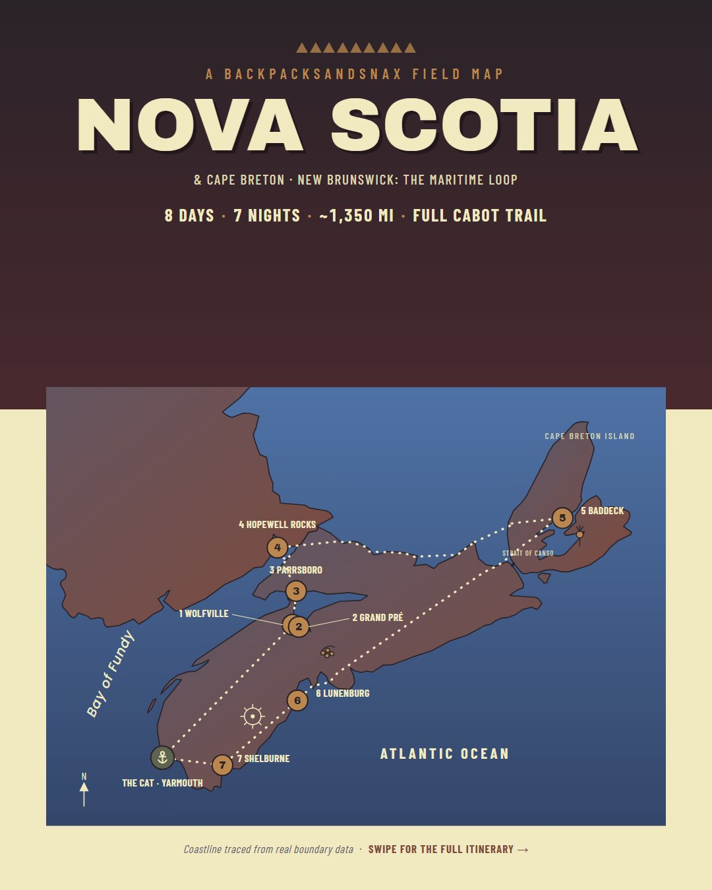
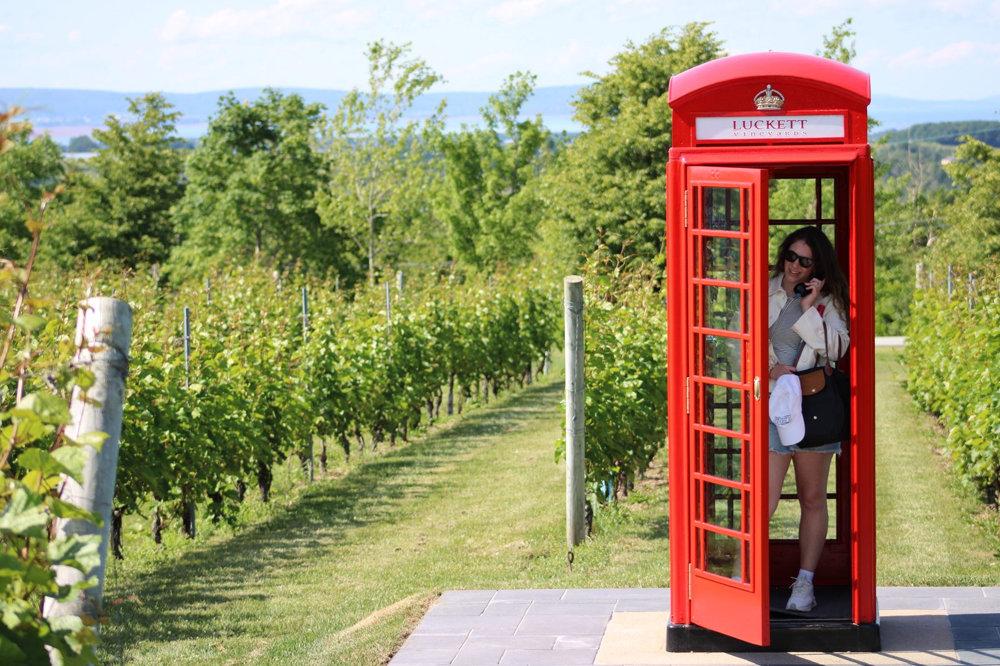
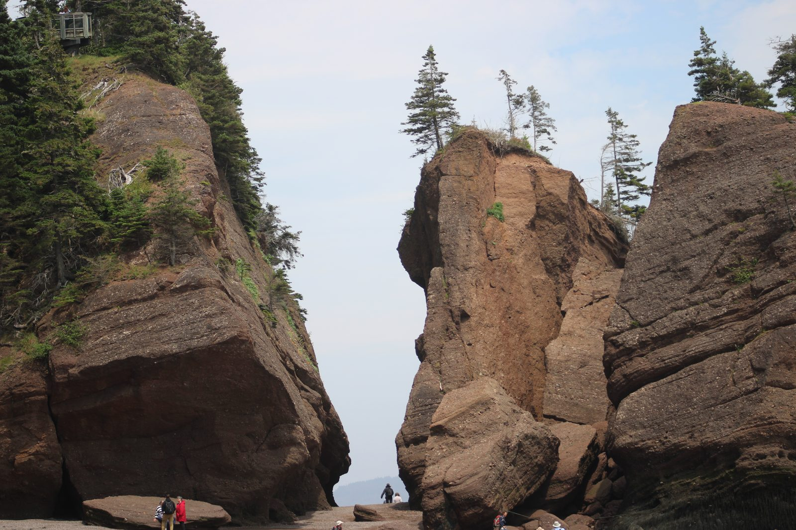
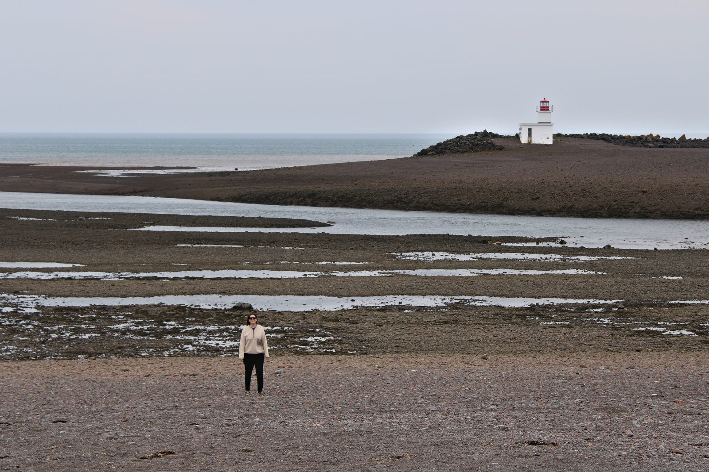
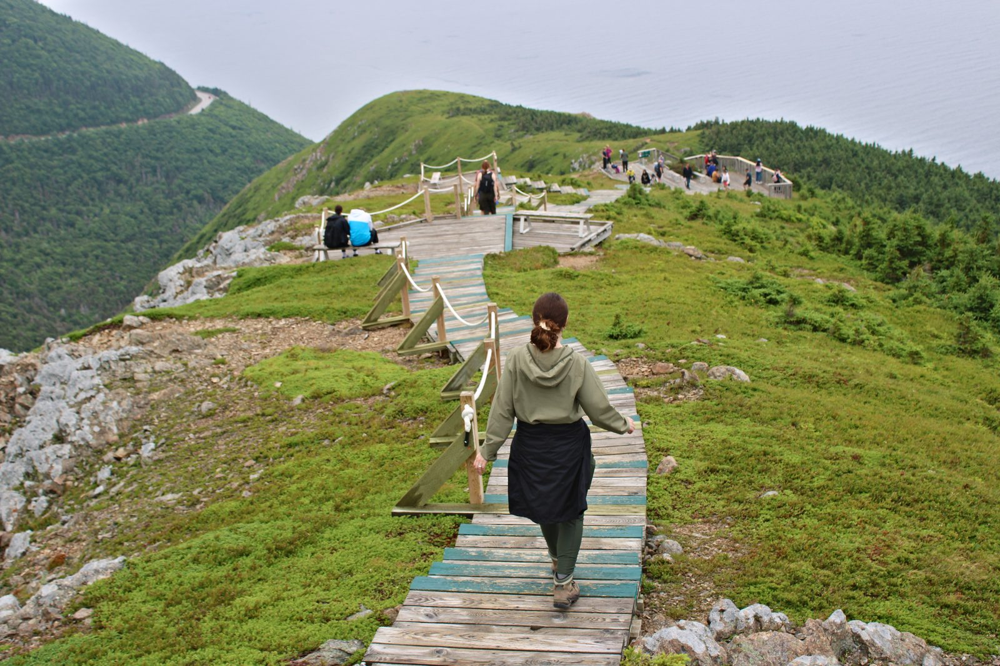
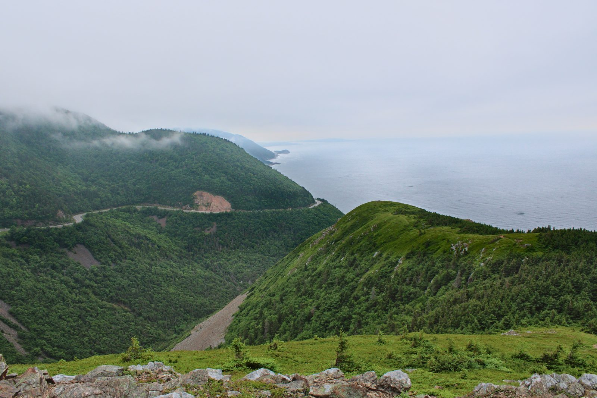
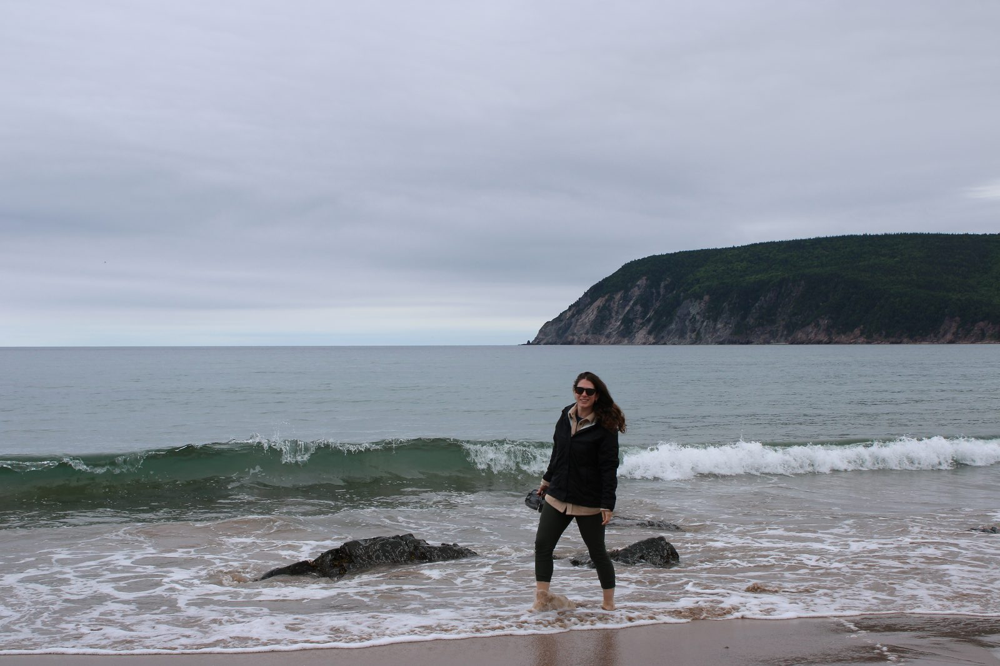
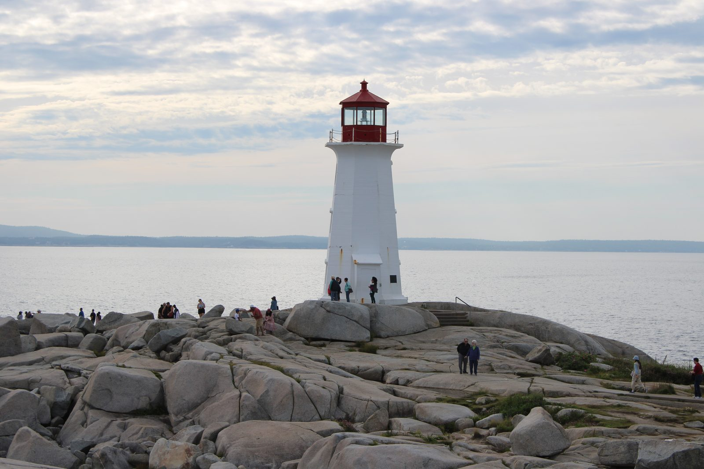
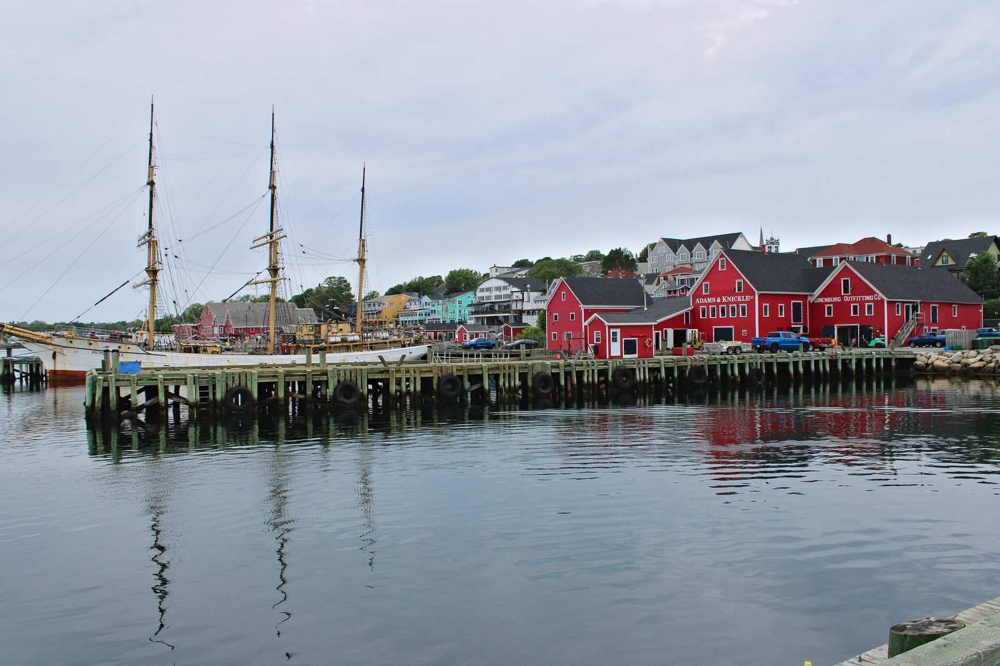
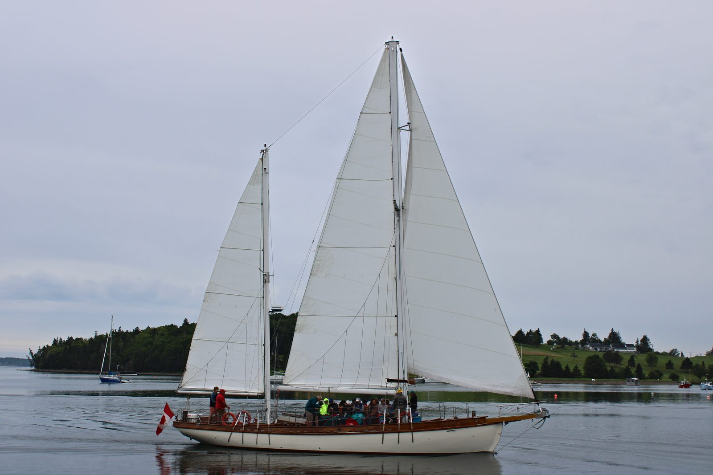

Free trip map
The Maritime Loop
8 days · 7 nights · ~1,340 mi of driving
Nova Scotia, Cape Breton, and a corner of New Brunswick, starting and ending at the Yarmouth ferry. Wine country, the highest tides on Earth, the full Cabot Trail loop, Peggy's Cove, and a UNESCO-listed harbor town, with every stop, stay, and drive we actually did.

Free, no signup. The live map opens in Google Maps, where you can save it to your own account and use it for directions on the road. Prefer another app? Download the route as KML for Google Earth, Gaia GPS, OsmAnd, and most map apps.
Free for your own trip planning. Print it, save it, and share the link. Please don't resell it or repost the map as your own. Field map coastline: Natural Earth (public domain). Route line and pin locations in the KML download: © OpenStreetMap contributors (ODbL). Photos on the map and in the KML are ours.
Plan Hopewell Rocks around the tide, not the clock
The Bay of Fundy swings up to about 48 feet between low and high water. Walk the ocean floor at low tide, then come back at high tide and watch kayakers paddle over the same spot.
The ocean floor is open only for a few hours around low tide, and the water comes back fast. Check the day's tide table, follow the posted times and park staff direction, and never head out on a rising tide. Want to be on the water yourself? Book a guided kayak tour. The park and its ocean floor access are seasonal, so check that it's open before you drive over.
Tide times: NB Parks tide tables for Hopewell Rocks or Fisheries and Oceans Canada.
Day by day
The route
Hotels are where we stayed, not sponsors. Drive times are rough, without stops.
-
Day 1
The CAT ferry to Yarmouth, then Wolfville
Stay: Tattingstone Inn, Wolfville
Sail from Bar Harbor, Maine, to Yarmouth, Nova Scotia (we left at 3:00pm and landed at 6:30pm). Drive inland and arrive in Wolfville around 9pm.
Drive ~2 hrs 30 min -
Day 2
Grand Pré wine country, then Parrsboro
Stay: Gillespie House Inn, Parrsboro (2 nights)
Morning at the Wolfville Farmers' Market if it's running. Then Luckett Vineyards (the red phone booth), Tangled Garden, and Domaine de Grand Pré. Also close by: Blue Beach, Benjamin Bridge, Lightfoot & Wolfville.
Drive ~2 hrs 30 min -
Day 3
Hopewell Rocks, New Brunswick
Stay: Gillespie House Inn, Parrsboro
Day trip to the flowerpot rocks and back. Time it with the tide (see above), and hike the Fundy shore around Parrsboro with the rest of the day. The tide runs the whole Fundy shore, not just Hopewell: on the beaches around Parrsboro, check the tide before you walk out and keep an eye on your way back.
Drive ~2 hrs each way -
Day 4
Across to Cape Breton: Baddeck
Stay: The Telegraph House, Baddeck (2 nights)
Break up the drive in New Glasgow or Stellarton, about two hours in. Add the Middlehead Trail at Ingonish if you have the legs; it's in Cape Breton Highlands National Park, so grab a park pass.
Drive ~4 hrs -
Day 5
The Cabot Trail
Stay: The Telegraph House, Baddeck
The big one: the whole loop, clockwise from Baddeck through Margaree, Chéticamp, Pleasant Bay, Cape North, and Ingonish, then around St. Ann's Bay and back to Baddeck. Along the way: the Skyline Trail boardwalk, ice cream at Mr. Chicken in Chéticamp, and Ingonish Beach. Dinner back at the Telegraph House's Cable Room. Fill up before the Highlands, expect patchy cell service, and watch for moose at dusk. No drones: Parks Canada doesn't allow recreational drone flying in national parks.
About 185 mi, a full day -
Day 6
Peggy's Cove, then Lunenburg
Stay: Lunenburg Arms Hotel & Spa
Stop at Peggy's Cove on the way for the lighthouse and the granite. Stay off the black rocks and back from the water's edge. Waves there can run much bigger than the ones before them and have swept people into the sea. Then Lunenburg, with its UNESCO-listed waterfront where the racing schooner Bluenose was built.
Drive ~5 hrs with the Peggy's Cove stop -
Day 7
Shelburne
Stay: The Coopers Inn B&B, Shelburne
A quiet harbor town to slow down in before the ferry. Worth a look: The Emerald Light.
Drive ~1 hr 30 min -
Day 8
Yarmouth and The CAT home
Ferry back to Bar Harbor
Short drive to the terminal (our sailing left at 9:30am and landed at 1:00pm). Ferry schedules change every season, so book from The CAT's current timetable.
Drive ~1 hr
From the road
What it looked like









Our trip was in July 2025. Hours, prices, and schedules change, so check before you go. Read our trail safety note too: this is a trip report, not professional guidance.